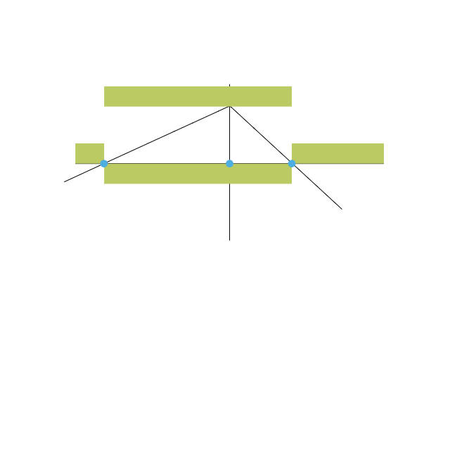

Property-Based Testing with FsCheck
Testing examples
- Hardcoded input
- Hardcoded expected output
Assert.AreEqual(expected, actual)
Testing examples
Testing examples
Testing properties

- Write specification using properties
- ???
- Profit!
How?
Edge Cases
v
Equivalence Classes
Hardcoded input
v
Random input (within an equivalence class)
Hardcoded "magic" output
v
Inverse operations, idempotence, commutativity...

FsCheck
- Randomized testing library
- Built-in generators for many types
- Can easily generate complex values too
- Standalone or integrated with many testing libs
- Generate input
- Execute test
- Verify properties
Arbitrary = Generator + Shrinker
- Generate -> find error -> shrink
Advanced features
- Value classification
- Model-based testing